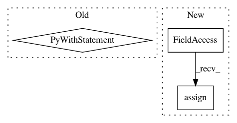

f7cd20b56dd5b290ddfa1dc9a17d516b112a0baf,snntoolbox/simulation/backends/inisim/temporal_pattern.py,SpikeMaxPooling2D,call,#SpikeMaxPooling2D#Any#Any#,487
Before Change
updates = self.update_spikevars(activ)
with tf.control_dependencies(updates):
return activ + 0
custom_layers = {"SpikeFlatten": SpikeFlatten,
"SpikeDense": SpikeDense,
"SpikeConv2D": SpikeConv2D,
"SpikeAveragePooling2D": SpikeAveragePooling2D,
After Change
def call(self, x, mask=None):
activ = MaxPooling2D.call(self, x)
self.spikerates.assign(activ)
return activ
custom_layers = {"SpikeFlatten": SpikeFlatten,
In pattern: SUPERPATTERN
Frequency: 3
Non-data size: 3
Instances
Project Name: NeuromorphicProcessorProject/snn_toolbox
Commit Name: f7cd20b56dd5b290ddfa1dc9a17d516b112a0baf
Time: 2020-05-11
Author: bodo.rueckauer@gmail.com
File Name: snntoolbox/simulation/backends/inisim/temporal_pattern.py
Class Name: SpikeMaxPooling2D
Method Name: call
Project Name: keras-team/keras
Commit Name: 93da10007c43448cd2671bfe529796c601cff9aa
Time: 2021-03-02
Author: scottzhu@google.com
File Name: keras/distribute/sidecar_evaluator.py
Class Name: SidecarEvaluator
Method Name: start
Project Name: NeuromorphicProcessorProject/snn_toolbox
Commit Name: f7cd20b56dd5b290ddfa1dc9a17d516b112a0baf
Time: 2020-05-11
Author: bodo.rueckauer@gmail.com
File Name: snntoolbox/simulation/backends/inisim/temporal_pattern.py
Class Name: SpikeAveragePooling2D
Method Name: call